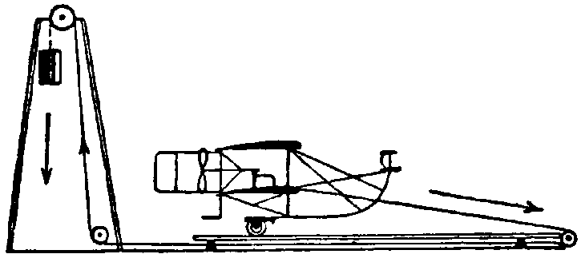
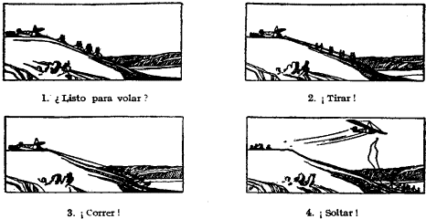
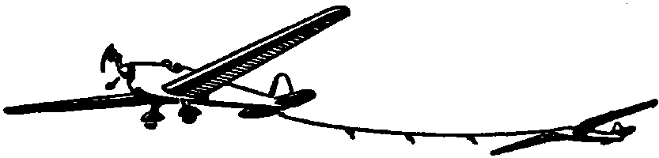
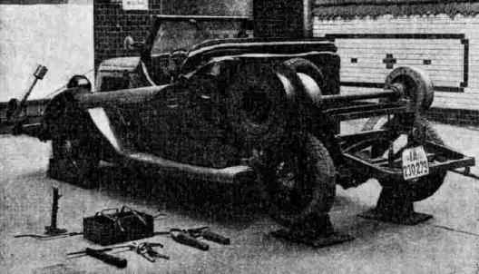

Manual del Vuelo a Vela
Wolf Hirth
1942
Distintos modos de envolar
por
GEORG BRÜTTING
La
evolución y el progreso del vuelo a vela dependieron en gran parte de los diferentes
métodos de realizar el despegue, los cuales representaron un problema importante en los
años anteriores a la primera guerra mundial y al principio de los vuelos en el Rhön.
Envuelo a la carrera
Este modo
de despegar fue el empleado en los tiempos del precursor Otto Lilienthal. Se colgaba con
sus brazos del armazón de bambú de las alas, se ponía contra el viento en el borde de
la ladera, esperaba una buena racha de viento y se lanzaba en rápida carrera desde la
meseta al aire. Este modo de envolar se empleó desde Lilienthal hasta los días de los
hermanos Wright, siendo usado también por el inglés Pilcher y los americanos Chanute,
Herring y otros, y aun en los primeros años del Rhön, verbigracia, por Pelzner y
Schultz, cuando se ejercitaban volando los planeadores de piloto colgado.
Envuelo a mano
Otro modo
de despegue de los primeros años fue el envuelo a mano, que usaron los hermanos Wright en
1900, en sus primeros vuelos y que se volvió a emplear en 1920-1921 con el Weltensegler:
algunos hombres sostenían el aparato por los extremos de las alas, hasta que por sí
mismo era elevado en el aire. En el Weltensegler se hacía igualmente sosteniéndole por
el centro de las alas, en el elemento que se llamaba « puente ». Este modo de envolar
podía usarse en aquel tiempo, porque los planeadores tenían muy poco peso y pequena
velocidad de viento bastaba para iniciar el vuelo. Hoy no es posible pensar siquiera en
semejante medio de despegue.
Envuelo autónomo
Un método
de envuelo raramente empleado es el envuelo autónomo, que puede emplearse con viento
fuerte y especialmente con aparatos de alas de mando propio, como se vio en los aparatos
de Harth-Messerschmitt 1922. También con el «Stanavo» pudieron hacerse despegues sin
ayuda exterior en 1931, en Grunau, con viento de 16-20 m/seg. Desde la ladera, el velero
subía 50 m. y volaba « hacia atrás » unos 100 m., hasta llegar a la zona descendente y
aterrizaba otra vez en el lugar de donde había salido.

Fig. 82. Pilón de envolar de los hermanos Wright, empleado hacia el año 1903. A la izquierda, se ve el peso pendiente del mástil; a la derecha, el carril de deslizamiento sobre el cual avanzaba el aparato por la acción del cable que estaba sometido a la tracción resultante de la caída del peso
Envuelo por catapulta
En
1908-1910, en las experiencias de planeo que realizó Erich Offermann, en el alto Venn,
despegaba con catapulta, como la que usaron también los hermanos Wright para sus ensayos
con avión de motor, es decir, un peso que desciende, un cable y un carretón de envolar.
Después de cada envuelo, el peso se elevaba otra vez lentamente y quedaba dispuesto para
otro nuevo envuelo; sin embargo, este método, comparado con otros procedimientos, era
demasiado costoso y proporcionaba altura inicial muy pequeña. Su manejo era peligroso por
los grandes esfuerzos que intervenían y la necesidad de montar poleas, cordones de goma,
tornos y otros mecanismos, por lo que no se generalizó su empleo. Pero esto no quiere
decir que el método de la catapulta, en esta o en otra forma, no llegue a tener
importancia en la historia del vuelo a vela (fig. 82).
Envuelo por tracción
El envuelo
por tracción con una cuerda de cáñamo fue realizado desde 1910 por el viejo maestro
Harth que, en sus vuelos planeados, le usó juntamente con el envuelo a mano. Su
colaborador, el conocido constructor actual de aviones Messerschmitt, organizó su «
equipo de envuelo ». Este equipo tiraba de Harth, sobre la Ludwager Kulm, en Bamberg,
hasta que el planeador había alcanzado la altura necesaria para el planeo; entonces
Messerschmitt soltaba la cuerda. Este método de envuelo podía usarse porque Harth
empleaba un aparato con alas de mando propio, el cual tenía pequeña carga superficial,
y, naturalmente, esta maniobra suponía que el viento tenía intensidad suficiente. Harth
llevó consigo este método al Rhön, y cuando Wolf Hirth construyó, con sus dos amigos
de Bamberg, el primer « Hopser », tiraron de él con la cuerda, a derecha e izquierda,
montaña abajo, por las laderas de la Wasserkuppe.
Envuelo por tirantes
Con gran
asombro de sus compañeros, se presentó en 1920 el Ing.-dipl. Klemperer, de Aquisgrán,
llevando consigo como cuerda para envolar un cable de goma. Este cable se pasaba alrededor
de los patines de su monoplano, los cuales entonces no iban directamente en el fuselaje,
sino unidos a unos montantes fuselados; análogamente a los trenes de aterrizaje de los
aviones de motor, sólo que, en vez de ruedas, eran patines. Entonces el equipo de hombres
para el envuelo, dividido en dos grupos, asía cada uno de los cabos del cordón de goma y
se ponía a correr tirando con fuerza cuanto podía. En esta maniobra no hacía falta el
equipo de cola, porque, dado el pequeño peso del aparato, bastaba el rozamiento del suelo
y una pequeña tensión para dar al avión el impulso suficiente para el salto de envolar,
con el que quedaba ya en el aire o « despegado del suelo », pudiendo hacer un vuelo
planeado o después un vuelo a vela, si alcanzaba la ascendencia de la colina. Sin
embargo, este punto de aplicación de la tracción al aparato no era conveniente, porque
resultaba por debajo y hasta, en algunos aviones, por detrás del centro de gravedad.

Fig. 83
Por esta
razón, se vio usar ya en el concurso de 1921 un gancho colocado en la parte inferior del
hocico del fuselaje, tal como hoy se emplea, y del cual tiraba el cable de goma siendo
soltado por el equipo de envolar al iniciarse el vuelo, quedando así consagrado el
método ideal para el envuelo de veleros que hoy es de uso general. Aunque en los primeros
años del Rhön se veía emplear, a la vez, los distintos métodos de envuelo, fue
abriéndose paso más y más el método por tracción, especialmente con tirantes de goma,
y en 1922 quedó este método como exclusivo. A lo largo de la evolución del vuelo a
vela, este método de envolar fue también perfeccionándose y así se introdujeron los
añadidos de cuerda de cáñamo, tal como se emplean hoy y de los que se ase para hacer la
tracción; asimismo se ideó la deslizadera de madera untada de sebo o grasa adecuada, con
el fin de que se deslizase con más suavidad el patín y que permitía, además, buen
despegue en los terrenos de malas condiciones, y finalmente el piquete de anclaje para la
cola, que mantenía el velero por detrás y luego se suelta, sea por un ayudante o por el
mismo piloto (fig. 83).
Envuelo por tirantes y
catapulta
También
hay que mencionar el envuelo por catapulta y tirantes, como lo hizo Wolf Hirth con Thumm
en la Dreifaltigkeitsberg, en Spaichingen, cosa que fue necesaria porque, en primer lugar,
la carrera del equipo, al hacer la maniobra, habría sido demasiado peligrosa por lo
pendiente que era el terreno y, en segundo lugar, porque ese equipo sólo se componía de
cuatro hombres. Se fijó el avión por la cola y del gancho de despegue salían tres
tirantes de goma, que se tesaban uno por uno y se fijaban a unos piquetes de anclaje
clavados en el terreno; al soltar la cola, cosa que podía hacer el piloto mismo, salía
el avión lanzado al aire. El grupo Akaflieg, de Darmstadt, se dedicó a perfeccionar este
método, para lo que unió los tirantes de goma a una anilla y de ésta salía un fiador
de escape que estaba unido por un elemento de hilo de acero al gancho de despegue del
fuselaje; una vez montado como antes el aparato, con los tirantes tensos, podía zafarse
el fiador cuando un ayudante o bien el mismo piloto tiraban de un cordel o alambre.
Envuelo por remolque
En 1879
construyó Lienfeld un gran modelo de avión, no tripulado, de 108 kg. de peso y el cual
se elevaba en el aire, montándolo sobre carriles y tirando de él una locomotora.
También emplearon los hermanos Wright en 1900 este modo de envolar cuando hicieron sus
primeros ensayos de vuelo, remolcando el modelo de gran tamaño, no tripulado, por medio
de un automóvil, y así alternaron este medio con los otros ya dichos a mano y autónomo,
cuando empezaron a pilotar sus aparatos, siendo también el remolque un medio empleado por
su compatriota Chanute. Este hizo construir un automóvil pequeño con el cual envolaba su
biplano tripulado por el ingeniero Herring. También son conocidos los ensayos de
Archdeacon y Voisin en 1905, los cuales empezaron por despegues en colina, pero
continuaron con automóvil en campo raso, como también con canoa de motor en el
La razón de esto está sin duda en el rápido progreso
que había tenido el vuelo con avión de motor, que no tenía las trabas impuestas por el
volar pegado al terreno y cautivo con un cable de remolque. Esta necesidad de soltarse del
terreno se presentó con más intensidad aún cuando, en Memania, a consecuencia del
tratado de Versalles, el único medio deportivo de volar era el vuelo sin motor, que por
tal causa tenía necesariamente que generalizarse. El movimiento del vuelo a vela se
desprendió de su patria chica, las laderas del Rhön para, rodando por las colinas de
Alemania, llegar a los valles y encontrar también calurosa acogida en las comarcas
llanas. Aquí faltaban las condiciones para que, por medio del envuelo con tirantes, fuese
posible llegar a las ascendencias orográficas que no existían por falta de colinas.
Por consiguiente, fue necesario buscar otros
procedimientos para obtener suficiente altura inicial de vuelo.
Remolque por avión
Primeramente
fueron los mismos pilotos de velero ya ejercitados los que querían seguir practicando el
deporte en su tierra, así que no es extraño que el primer modo de remolque adoptado y
practicado fuese el remolque por avión. Ya en otoño de 1919, el piloto berlinés
Schwerdt hizo ensayos en el aeródromo de Tempelhof, que consistieron en hacer que su
planeador fuese remolcado por un automóvil, y también el conocido constructor y piloto
Fokker hizo remolcar su velero biplano por un auto, en la Wasserkuppe, en 1922; pero ambas
tentativas fueron hechos aislados que no tuvieron repercusión sobre el ulterior progreso.
El primer remolque por avión fue hecho en 1927 por Fieseler sobre un Espenlaub y cable de
remolque, quedando en olvido; aunque fue el primer vuelo de importancia en remolque que
demostró la posibilidad de este género de vuelo. Únicamente continuó estas
experiencias Raab-Kanzenstein, pero no como nueva modalidad del vuelo a vela, sino como
nuevo espectáculo de atracción, « el tren aéreo », que entonces despertó mucha
curiosidad (fig. 84).
El primer gran vuelo remolcado por avión lo realizó en
abril de 1930 el americano Frank Hawks, que voló remolcado en el Franklin « Eaglet »
más de 4000 km. a través de todo el continente americano del Norte, desde San Diego
hasta Nueva York.

Fig. 84. Remolque de velero. (Método de enganche al patín de cola.)
La
resolución del problema, para el vuelo a vela, la llevó a cabo la Sociedad, entonces
existente en Alemania, Rhön-Rossitten, que recogió la idea y la desarrolló teórica y
prácticamente.
Los vuelos que se proyectaron con este motivo los
realizaron Peter Riedel como piloto del avión remolcador y Günther Groenhoff como
piloto del velero, quedando demostrada la utilidad de tal género de vuelo. Se
recogieron toda clase de enseñanzas y se repitieron las pruebas con otros aparatos, hasta
que en abril de 1931 el nuevo método celebró su primer gran éxito con los vuelos de
Groenhoff, que tanta emoción produjeron. En otoño del mismo año, se dieron en Griesheim
(Griesheim es el aeródromo adjunto al Establecimiento alemán de experimentación del
vuelo a vela (DFS), situado en Darmstadt, como ya se ha dicho. - N. del T.)
los primeros cursos de vuelo remolcado, y hoy este vuelo se practica en todas partes,
siendo indispensable para realizar, con los veleros, el vuelo acrobático; vuelos de
presentación y de investigación; para pruebas de nuevos veleros y para llevar éstos a
las ascendencias térmicas; hasta en los concursos se emplea desde 1931, en días de poco
viento, para que los veleros alcancen la altura inicial conveniente. Además, ha sido
empleado en algunas ocasiones como medio más rápido y seguro para transporte de veleros,
resultando ser procedimiento auxiliar de bastante importancia en los concursos del Rhön
de los últimos años.
Remolque por automóvil
El
automóvil dio otra modalidad al envuelo por remolque.

Fig. 85. Torno montado sobre la rueda posterior y accionado por ambas ruedas (Sistema Helbig). A la izquierda del asiento del conductor se ve un largo palastro « guardacable » que protege al conductor de un posible estrabonazo del cable. Delante, a la izquierda del faro, se ve la « guillotina » con su contrapeso, que corta el cable cuando un alumno olvida desembragar por si mismo oportunamente
En los años 1928 y 1930 se
despertó en los Estados Unidos un gran movimiento hacia el vuelo a vela a consecuencia de
las expediciones alemanas que allí fueron en esos años y con esta afición se puso de
manifiesto la necesidad de un procedimiento sencillo para envolar en terrenos llanos. Y
¿qué había más a mano en el país clásico del automóvil, para resolver el problema ?
Entonces se introdujo en los Estados Unidos el método de remolque por auto; Wolf Hirth le
aprendió en 1930 y cuando volvió a Alemania llevó consigo la experiencia que allí
había recogido, y así fue aceptado este nuevo método de envolar, que se estudió y se
perfeccionó con el empleo de mecanismos sólidos y apropiados, y hoy forma parte de los
métodos de enseñanza del vuelo sin motor.
Por extensión, se da el mismo nombre al conjunto de
tirantes que sale de la armadura de la polea y a los hombres que la sostienen para darle
fijeza, y entonces el cable cambia de dirección tomando la que se desee para la maniobra.
Se ha hecho también el envuelo fijando el cable y
avanzando la pazteca con el equipo de hombres que van en los tirantes.
En general, puede decirse que hay dos géneros de envuelo:
el envuelo bajo que, como el realizado por tirantes o a tirón, no proporciona altura
apreciable al avión, y el envuelo alto que, por el contrario, da gran altura inicial,
como en el caso de remolque. N. del
T.),y en el remolque por torno, que equivale a un remolque con auto estacionado (fig.
85).
Aunque el envuelo por tirantes de goma es el método
clásico para los veleros y será el que subsista siempre, el envuelo por remolque, con
todas sus variantes, es el que ha dado al vuelo sin motor la posibilidad de ser practicado
en todas partes, haciendo este vuelo independiente de las formas del terreno y dándole
los medios para ser realizado en terrenos llanos, así que hoy, en cualquier faja de
terreno del mundo se puede hacer un vuelo sin motor, un vuelo de la más bella clase de
aviación, como lo demuestran continuamente los grandes éxitos que ese vuelo alcanza en
el mundo entero.
Diez mandamientos para tratar bien los tirantes de goma
1. Deja que los tirantes estén a menudo y mucho tiempo expuestos
a la lluvia; el agua los mantiene frescos.
2. También, en el descanso del mediodía, déjalos al
sol; el sol es muy sano.
3. No emplees los tirantes sólo para envolar; también
puedes emplearlos para atar el aparato cuando sea necesario; para tirar de algo que sea
preciso, y lo mismo son muy apropiados para llevar cargas pesadas hasta el almacén
tirando de ellos.
4. Pisa fuerte con tus zapatos sobre los tirantes: esto
les da mucha vida, y si el calzado tiene clavos, mejor.
5. Debes preferir el envuelo de caballero (Se alude a
lanzar el aparato encabritado con mucha fuerza. - N. del T.) esto deja a los
tirantes recuerdos imperecederos.
6. En los tirantes se forman anillos anuales a
consecuencia de la superposición de las vueltas del tejido, así que debes estar muy
orgulloso, si dejas que se formen esos anillos sin preocuparte de ellos y no trates jamás
de quitarles esas vueltas estirándolos hasta el 100%.
7. Haz que el patín aplaste los tirantes lo más a menudo
posible: los tirantes bien magullados duran mucho.
8. Los tirantes deben estar limpios e impecables. Nunca
debes tocar la cera que llevan.
9. Debes contar con un estilete el número de hilos de
goma que tiene el tirante: si hay dos menos, escribe al fabricante diciéndole que es un
embustero.
10. Sobre todo, haz precisamente lo contrario de lo que
dicen estas reglas y estarás muy satisfecho con tus tirantes.
KARL THEODOR HAANEN